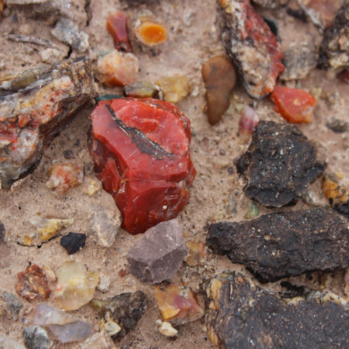

New here?

New to rockhounding and don't know where to start? Not to worry, we will show you the ropes. Click below to head over to our "Getting Started" guide
Getting StartedRocks & Minerals In Nebraska


Nebraska offers rockhounding enthusiasts a unique and diverse experience, with a rich geological history that has left behind fascinating rocks, minerals, and fossils to discover. From the intriguing Fairburn agates to the impressive fossils of ancient marine life, Nebraska is a treasure trove for collectors. Notable locations to explore include the Toadstool Geologic Park, with its unusual rock formations, and the Ashfall Fossil Beds, where you can uncover remnants of prehistoric creatures that once roamed the region.
Sponsored Dig Site

Own a digsite you would like to advertize in Nebraska? Contact us for more information about being our sponsor of the month! Email sponsors@rockhounding.org for more information.
Dig With UsPopular Rocks In Nebraska
-

Agate
Marvel at the beautiful, intricate patterns and colors found in Nebraska's agates, formed from silica deposits in volcanic rock.
Read More -
 Petrified Wood
Petrified WoodDiscover the striking beauty of petrified wood, ancient trees transformed into colorful, fossilized stone over millions of years.
Read More -
 Calcite
CalciteUnearth the fascinating crystal formations of calcite, a versatile mineral that can be found in a variety of captivating shapes and colors.
Read More -
 Ammonite
AmmoniteHold a piece of prehistoric marine life in your hands with ammonites, spiral-shelled fossils that once roamed the ancient seas.
Read More -
 Barite
BariteExplore the world of barite, a heavy mineral with an incredible range of colors and crystal habits, often found alongside other minerals.
Read More -
Mosasaur Fossils
Uncover the remains of fearsome mosasaurs, gigantic marine reptiles that once dominated the ancient seas of Nebraska.
Read More -
 Pyrite
PyriteGet dazzled by pyrite, also known as "Fool's Gold," a shiny, metallic mineral with a golden hue and fascinating crystal shapes.
Read More -
 Quartz
QuartzExperience the allure of quartz, one of the most abundant and diverse minerals on Earth, with stunning crystal formations and colors.
Read More -
 Fluorite
FluoriteBehold the enchanting beauty of fluorite, a mineral known for its spectacular range of colors and unique cubic crystal formations.
Read More -
 Copper
CopperDiscover the distinctive reddish hue of copper, an essential and versatile metal with a rich history and numerous applications.
Read More
Popular Areas In Nebraska
-
 Indian Cave State Park
Indian Cave State ParkExplore the scenic Indian Cave State Park, where you can discover beautiful quartz crystals and other interesting minerals.
Read More -
 Ashfall Fossil Beds
Ashfall Fossil BedsStep back in time at Ashfall Fossil Beds, a paleontological site that preserves ancient animal fossils from a volcanic ashfall.
Read More -
 Rock Creek Station State Historical Park
Rock Creek Station State Historical ParkVisit Rock Creek Station State Historical Park for a chance to find fascinating minerals and learn about the area's rich history.
Read More -
 Toadstool Geologic Park
Toadstool Geologic ParkMarvel at the otherworldly landscape of Toadstool Geologic Park and search for unique minerals among the fascinating rock formations.
Read More -
 Fort Robinson State Park
Fort Robinson State ParkDiscover a wealth of fossils and minerals at Fort Robinson State Park, a historic site set against the backdrop of the stunning Pine Ridge.
Read More -
 Wildcat Hills State Recreation Area
Wildcat Hills State Recreation AreaUnearth hidden treasures in Wildcat Hills State Recreation Area, where you can find interesting minerals and enjoy panoramic views of the rugged landscape.
Read More
Geology of Nebraska
Nebraska's geologic history dates back to the Precambrian era, over a billion years ago, when ancient rocks formed the foundation of the state's landscape. During the Paleozoic era, Nebraska was submerged under a shallow sea, leading to the deposition of sedimentary layers like sandstone, limestone, and shale.
In the Mesozoic era, Nebraska experienced a mix of marine and terrestrial environments. The Cretaceous period saw the Western Interior Seaway cover parts of the state, leaving behind marine sediments and fossils of marine life. The Tertiary period, part of the Cenozoic era, brought about the uplift of the Rocky Mountains, which influenced the sedimentation and erosion patterns in Nebraska. This period also saw the formation of the Ogallala Group, a significant aquifer that supplies water to a large part of the Great Plains.
During the Quaternary period, glaciers advanced and retreated over the landscape, leaving behind glacial deposits and creating the rich soil that characterizes Nebraska's agricultural landscape today. Additionally, the state's geologic history includes the formation of intriguing features like the Sandhills, a vast area of sand dunes stabilized by grasses, and the Loess Hills, a region of windblown silt deposits.
Throughout Nebraska's geologic history, a variety of rocks, minerals, and fossils have been deposited, making the state a fascinating destination for rockhounds and those interested in understanding the Earth's past.